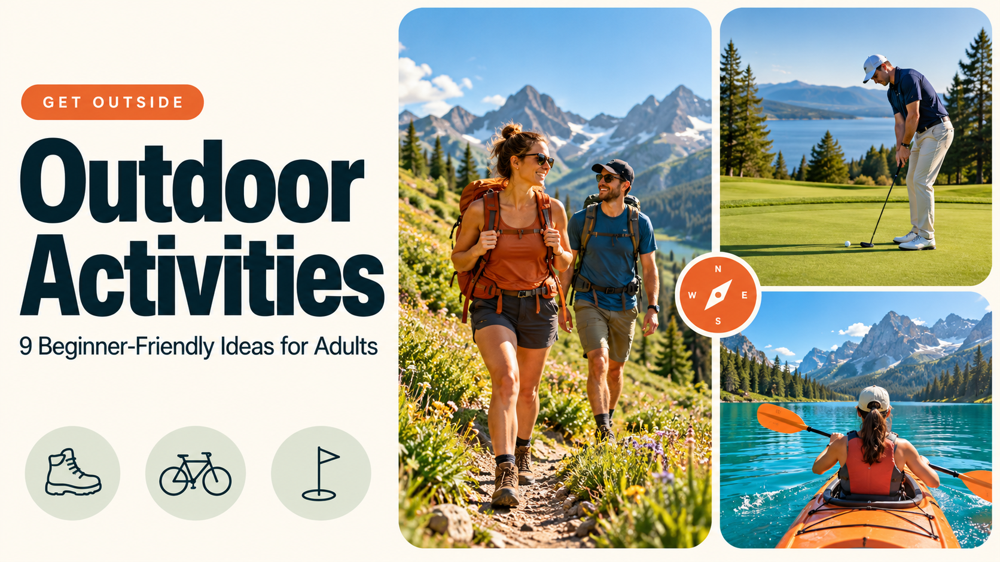

THE OUTDOOR EDIT · BEGINNER GUIDES
Outdoor Activities: 9 Beginner-Friendly Ideas for Adults
Outdoor activities give you practical ways to spend time outside, learn something new, and enjoy an afternoon alone or with friends. Walking, cycling, golf, birdwatching, and photography offer different starting points, depending on your interests, available time, and budget.
You do not need a remote destination or expensive equipment to begin. A nearby park, public golf facility, or familiar walking route can provide a worthwhile first outing. This guide explains nine options, what each involves, and how to choose something you will actually want to repeat.

Find your next activity
Pick what you feel like doing. Jump straight to a few ideas that fit.
What Are Outdoor Activities?
Outdoor activities are recreational pursuits enjoyed outside, including sports, nature observation, creative hobbies, and social outings. They range from an informal picnic to a golf lesson, a cycling trip, or a planned hike.
The category is broader than adventure sports. The National Park Service’s outdoor recreation directory includes birdwatching, photography, camping, cycling, and hiking. You can participate without competing, traveling far, or setting a fitness target.
Think about the experience you want first. Some activities provide quiet time to notice your surroundings. Others offer a skill to practice, a route to explore, or a reason to meet friends. That distinction helps you choose more effectively than simply following a popular hobby.
How to Choose Outdoor Activities That Fit Your Life
A suitable activity should fit your routine, access needs, and resources. Start with something manageable enough to repeat, then increase the challenge if you enjoy it.
Match Outdoor Activities to Your Available Time
Count the entire outing, including transport, preparation, participation, and returning home. A short walk or photography session may fit between other commitments. A booked lesson requires travel and arrival time, while camping usually involves more planning.
For organized sessions, ask the provider how long to allow. For independent outings, choose a clear finishing point before leaving. A realistic plan is easier to maintain than one that depends on having an unusually empty weekend.
Check the Full Starting Expense
Admission is only part of the expense. Parking, transport, equipment rental, lessons, and permits may affect your choice. Ask what a booking includes before paying.
Borrow or rent equipment while exploring an unfamiliar hobby. You will learn what you actually need before buying it. For golf, ask about loan clubs; for cycling, check whether a rental includes a helmet and basic adjustments.
Choose Your Preferred Experience
If you enjoy quiet observation, try birdwatching or photography. If exploring appeals to you, consider walking, hiking, or cycling. Golf offers a skill to develop over repeated visits, while a picnic creates space for conversation.
Consider who will join you, too. A group outing should accommodate different abilities and expectations. Discuss accessibility directly with participants and venues rather than assuming that an activity works equally well for everyone.
Compare Nine Outdoor Activities for Adults
Use this comparison to shortlist an activity before checking local facilities. Equipment, access, and expenses vary by location. The suggested starting points are planning ideas, not fixed requirements or guaranteed session lengths.
| Activity | Starting essentials | First outing |
|---|---|---|
| Walking | Suitable footwear and route | A nearby park loop |
| Hiking | Route information, water, footwear | A short marked trail |
| Cycling | Suitable bicycle and helmet | A quiet cycle path |
| Golf | Facility access and suitable clubs | An introductory lesson |
| Birdwatching | An observation spot | A local green space |
| Photography | Phone or camera | A familiar walking route |
| Gardening | Growing space and basic supplies | One outdoor container |
| Picnicking | Food, water, permitted location | A convenient park |
| Kayaking | Equipment and appropriate instruction | A guided beginner session |
9 Beginner-Friendly Outdoor Activities to Try
Each option below offers a different way to spend time outside. Choose one that matches your circumstances, then use the first step to turn the idea into a practical plan.
1. Walking: Begin Close to Home
Walking requires little organization when you have a suitable route nearby. A maintained park path, waterfront promenade, or familiar neighborhood loop can provide a straightforward introduction.
Choose the distance, surface, and gradient around your comfort and access needs. Make the outing interesting by noticing seasonal changes, exploring a different street, or inviting someone you have been meaning to catch up with.
You can also give the walk a purpose: find a new green space, identify three trees, or photograph an interesting building. Small changes make a familiar route feel less repetitive.
First step: Pick a manageable route and decide your turnaround point before leaving. Wear footwear suited to the surface and check the forecast.
2. Hiking: Explore a Marked Trail
Hiking adds terrain and route decisions to a walk. Distance alone does not explain difficulty; elevation, uneven ground, exposure, and weather also matter.
Choose a short, maintained trail with clear visitor information for your first outing. Read recent official updates and look for details about access, surfaces, closures, and available facilities. Photographs can be useful, but they do not replace route information.
Avoid planning around the fastest estimated completion time. Leave room for breaks and navigation, and turn back if conditions exceed your experience. Finishing comfortably gives you a better basis for choosing the next route.
First step: Find one beginner route, review its conditions, and share your plan with someone if heading away from populated areas.
3. Cycling: Explore at a Comfortable Pace
Cycling suits solo exploration, casual rides with friends, and practical journeys to nearby places. Beginners can focus on a comfortable route rather than distance or speed.
A designated cycle path may feel more approachable than a busy road. Check its surface, junctions, gradients, and shared use rules before riding. A route described as scenic is not necessarily suitable for a first attempt.
Make sure the bicycle fits and that its brakes and tires are in suitable condition. If renting, ask the provider to explain adjustments, handling, and what to do if you encounter a problem.
First step: Borrow or rent a suitable bicycle and try a short, familiar route. Agree on the pace beforehand when riding with others.
4. Golf: Learn a Skill Outdoors
Golf combines outdoor recreation with a skill you can develop over time. Players use different clubs to move a ball from a starting area into a hole, aiming to use as few strokes as possible.
You do not need to begin with a full round. A lesson, putting session, or driving range visit lets you explore the basic movements and equipment in a more focused setting.
Before booking, ask about loan clubs, beginner instruction, clothing requirements, and available practice areas. Tell the facility you are new so it can suggest an appropriate introduction.
Learning the language also helps. GolfDecode explains golf rules, scoring, equipment, and technique, making it a useful starting resource when unfamiliar terms get in the way of understanding the game.
As your confidence grows, ask a local professional whether a shorter course or further practice would suit your next visit. Golf and mini golf share putting elements, but their equipment, settings, and rules differ.
First step: Book an introductory lesson and confirm whether equipment is included. Focus on understanding the basics before purchasing a complete set of clubs.
5. Birdwatching: Notice More in Familiar Places
Birdwatching gives an ordinary outdoor visit a clear focus. A garden, park, or permitted wetland viewpoint can be enough to begin, and binoculars are optional for an initial attempt.
Watch a bird before trying to name it. Notice its size, movement, colors, call, and surroundings. Those details make identification more useful than guessing from one brief glimpse.
A field guide or identification app can support your observations. Keep a simple record of where and when you saw each bird, then revisit the same location to notice changes.
First step: Choose a nearby observation spot and watch quietly. Keep your distance from wildlife and avoid disturbing nests or feeding areas.
6. Outdoor Photography: Start With Your Phone
Outdoor photography can fit into another activity without requiring a separate trip. A phone camera is enough to practice composition, light, and attention to detail.
Choose one theme before leaving: reflections, tree bark, shadows, flowers, or interesting lines. A theme encourages closer observation and makes it easier to review your photographs afterward.
Try revisiting a familiar place at a different time of day. Compare how the light changes your subject rather than assuming a new location will automatically produce better pictures.
First step: Take five photographs around one theme during a short walk. Stay on permitted paths and respect other visitors and private property.
7. Gardening: Create a Small Outdoor Project
Gardening suits people who enjoy an ongoing project close to home. You can begin with one outdoor container rather than committing to a large planting area.
Choose plants around the sunlight, climate, and space available. Think about watering access and how often you will realistically provide care. A plant suited to your conditions is a more useful starting point than an attractive but demanding choice.
If you lack growing space, investigate community gardens and their participation arrangements. Some offer shared plots or volunteer sessions, although access and responsibilities differ.
First step: Select one suitable plant, check its growing requirements, and prepare an appropriately sized container with drainage. Keep notes on what works.
8. Picnicking: Make a Simple Social Plan
A picnic works when the main goal is conversation and time together. It does not need an elaborate menu or a full schedule of games.
Choose a permitted location with the facilities your group needs. Consider seating, shade, toilets, parking, public transport, and the distance between arrival points and your chosen spot.
Agree on shared supplies before leaving so everyone does not bring the same thing. Plan how to keep food appropriately stored and how to take rubbish away. Add a short walk or game only if the group wants one.
First step: Pick a convenient park, check its visitor rules, and assign a few basic supplies between participants.
9. Kayaking: Take a Guided Introduction
Kayaking offers a different perspective on water and the surrounding landscape. For a beginner, the right setting and instruction matter more than choosing a dramatic destination.
A guided session can introduce paddling, handling, equipment, and local procedures. Ask whether the experience is designed for complete beginners and what participant requirements apply.
Confirm flotation equipment, clothing advice, weather arrangements, and the provider’s instructions before attending. Water conditions can change, so follow the operator’s decisions about whether a session should proceed.
First step: Find an introductory session with a reputable local provider and explain your experience honestly before booking.
Planning Outdoor Activities With Friends
Start with the least experienced participant when choosing a group activity. Agree on the likely expense, travel arrangements, time commitment, and expected pace before making reservations.
For golf, a beginner group lesson may be easier to arrange than a full round. For walking or cycling, choose a route everyone understands and identify a convenient meeting point.
Give people an accurate description rather than calling everything easy. Surface conditions, distances, stairs, and equipment requirements help participants decide whether an outing suits them.
Keep the first plan modest. A shorter experience leaves room to learn what the group enjoys without committing everyone to a long or expensive day.
Build a Routine Around What You Enjoy
After your first outing, ask three questions: did you enjoy the activity, was the preparation manageable, and would you choose it again? Your answers matter more than whether you performed well or completed an ambitious goal.
If the activity appealed to you but the setting did not, change one variable. Try a quieter walking route, a different lesson time, or a smaller group. An inconvenient first experience does not necessarily mean the hobby is unsuitable.
Keep equipment purchases tied to actual use. Once you have repeated an activity, you will have a clearer idea of which items improve the experience and which can wait. This is especially useful for hobbies with extensive equipment choices.
Make the next plan specific enough to follow: choose a place, a day, and a simple objective. Invite a friend if company helps you get started, but leave room for changing weather and other commitments.
A regular outdoor habit can stay small. Returning to one park, practicing putting, or tending a few containers gives you continuity without requiring a new destination every week.
The goal is to make getting outside easier to arrange, enjoyable, and worth doing again.
What to Check Before Heading Outside
Preparation should match the activity and setting. A local picnic and a remote hike need different arrangements, but both benefit from checking practical details beforehand.
For remote trips, share your route and expected return time with someone who is not joining you. For organized activities, read the provider’s joining instructions rather than relying on general advice.
Frequently Asked Questions About Outdoor Activities
What are easy outdoor activities for beginners?
Walking, birdwatching, phone photography, and picnicking are straightforward starting points because they can require little specialist equipment. Choose a convenient location and manageable first outing. If you prefer structured instruction, consider a beginner golf lesson or another guided session appropriate to your experience.
Which outdoor activities can I try on a budget?
Local walks, birdwatching, photography with your phone, and picnics using existing supplies can keep spending low. Check transport, parking, and admission charges before leaving. Borrowing equipment also helps you explore a hobby before deciding whether buying your own supplies makes sense.
Is golf a suitable outdoor activity for beginners?
Yes. Start with an introductory lesson, putting practice, or a driving range session rather than assuming you need to play a full course immediately. Ask about loan equipment and beginner options. Learning basic scoring and etiquette beforehand can make the first visit easier to follow.
What outdoor activities are good for groups of friends?
Picnics, casual walks, cycling, introductory golf sessions, and guided kayaking can suit groups. Choose around shared interests, access needs, experience, and budget. Agree on pace and timing before booking, and give everyone a clear description of what participation involves.
How do I find outdoor activities near me?
Check official park websites, municipal recreation programs, community groups, public sports facilities, and local providers. Search for a specific activity alongside your city or area. Confirm current schedules, equipment availability, accessibility, and booking requirements directly with the organizer before making plans.
YOUR NEXT STEP
Conclusion: Choose Outdoor Activities You Can Repeat
The most useful outdoor activities are the ones that fit your interests, circumstances, and schedule. Start with a manageable outing, learn what you enjoy, and adjust the next experience accordingly.
That could mean a park walk, a first golf lesson, or a small photography project close to home. Choose one activity, check the practical details, and take the first step without committing to an entire hobby immediately.